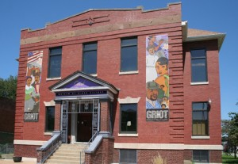

Moving Beyond the Edges
Image by Maureen Kavanaugh (stltourguide.wordpress.com)
[Team’s design brief and presentation slides]
The Partner
The Griot Museum of Black History is a wax museum depicting black history, located in the north side of St. Louis city. opened in February 1997. When the museum opened it was the second African-American was museum in the country. The Griot’s mission is to collect, preserve, and share the stories, culture, and history of Black people – particularly those with a regional connection to American history. The museum is located in a lower-income, majority black neighborhood in the deeply segregated city of St. Louis.
The museum is run by the founder and CEO, Lois Conley. Conley is a St. Louis native and has lived in the region her whole life. She recalls her family being resettled due to imminent domain “urban renewal” efforts in the 1950s. Lois and her family were moved out of her birth neighborhood of Mill Creek Valley, a prominent African American community. The history of Mill Creek Valley is not well known, yet deeply affected many black families in the region. Lois cites this as an important foundational experience that revealed to her the important of preserving and sharing black history and culture. In this sense, her work with the museum is also deeply personal.
Design Justice Principles
The primary design justice principles that will guide our process are:
- We see the role of the designer as a facilitator rather than an expert.
- We work towards sustainable, community-led and -controlled outcomes.
- Before seeking new design solutions, we look for what is already working at the community level. We honor and uplift traditional, indigenous, and local knowledge and practices.
Methods
Thus far the research methods we have employed include computer research about the history of the museum, its past and present programs, news articles, stories concerning the neighborhood in which The Griot is housed. However, our main source of research has been interviews with Lois Conley. For these informational interviews, we have practiced activity analysis, flow analysis as a means to better understand processes she typically undertakes. This is because Lois is the sole employee of the museum, and because we discerned that processes would be central to fundraising, audience development and strategizing around new developments, all central issues we needed to learn more about. We also wanted to learn what Lois has already tried and what are areas of further opportunity.
Findings
Our findings can be summarized into a few categories.
Fundraising is an ongoing challenge – Due to limited capacity, small size of organization, concerns about funders’ lack of interest in black history, and dearth of time to develop relationships, The Griot struggles to raise more funding beyond ticket sales.
The founder and CEO is overworked – Lois has limited capacity to attend to any needs beyond day-to-day operations. This seems to limit the time she can devote to fundraising, relationship building, the development of the building, audience growth and strategies regarding impending nearby development. Lois loves her work and is deeply committed to it but does endure a certain amount of stress from the lack of additional support.
There is an opportunity to grow The Griot’s audience – While The Griot has a dedicated audience of enthusiastic visitors, there are opportunities to continue to grow this audience to generate more revenue and to better achieve the museum’s mission.
There remains untapped resources within the Museum’s building – An entire floor of the museum is available and underutilized. With limited time and funding, this area hasn’t been developed but could be. The founder is interested in what might be possible for this space.
Impending developments nearby could pose incredible opportunities or threats to The Griot, but the museum is not connected to these developments – Lois has not been engaged in conversations surrounding these impending developments, but is generally excited about the potential positive effects they could have on the museum. Based on the history of displacement and racially-motivated disinvestment in St. Louis applied to different regions (ie. black neighborhoods), these developments may also pose challenges to The Griot.
Design Challenge Statement
“How might we ensure the financial well-being of the Griot Museum?” We see the financial well-being of the museum as interrelated to all the other issues we have uncovered through our research.
Beginnings of ideas
Create a strategy for fundraising
Design & launch a Kickstarter campaign
Support Lois in grant writing efforts, including past grant audits
Design a strategy for outreach to new development projects
Streamline work through automationDesign new campaign to draw new audience – social media?
Create Volunteer Program
Restructure Organization
Decrease Cost of Building
3D Printing


{kind=link}
{kind=link}
{kind=link}
{kind=link}
{kind=link}